Galeria do Projeto
Recursos Utilizados
Servidores

Hack

Pisos Elevados
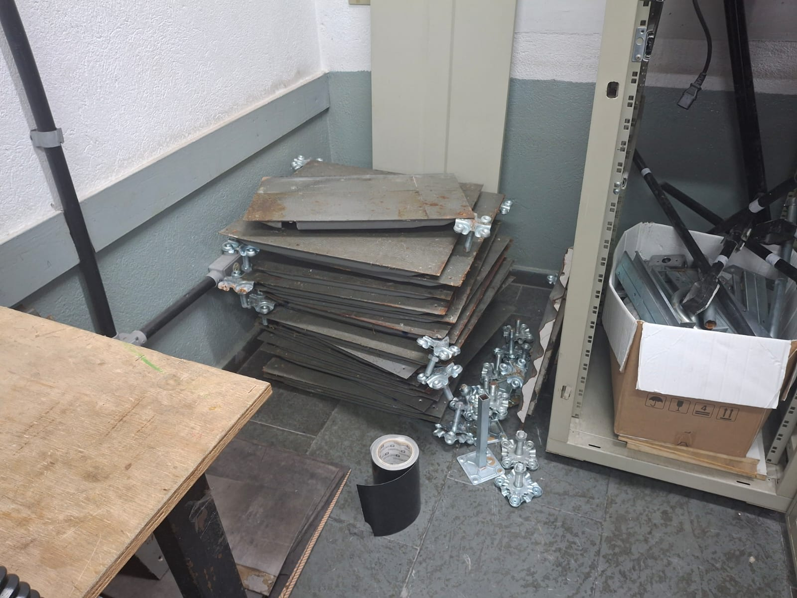Macaquinhos
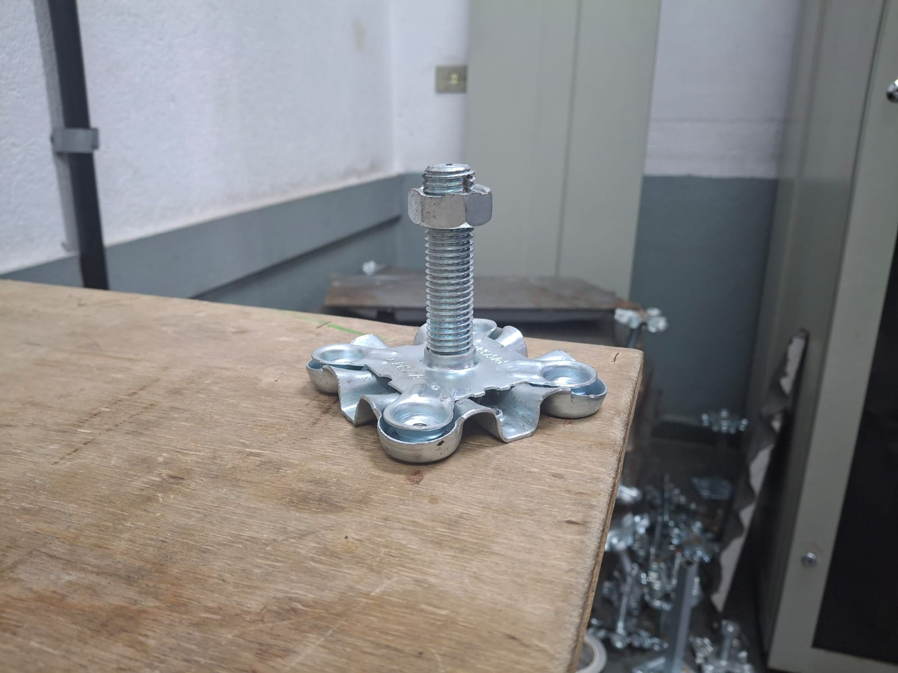
Montagem do Piso Elevado
Montando os Pisos
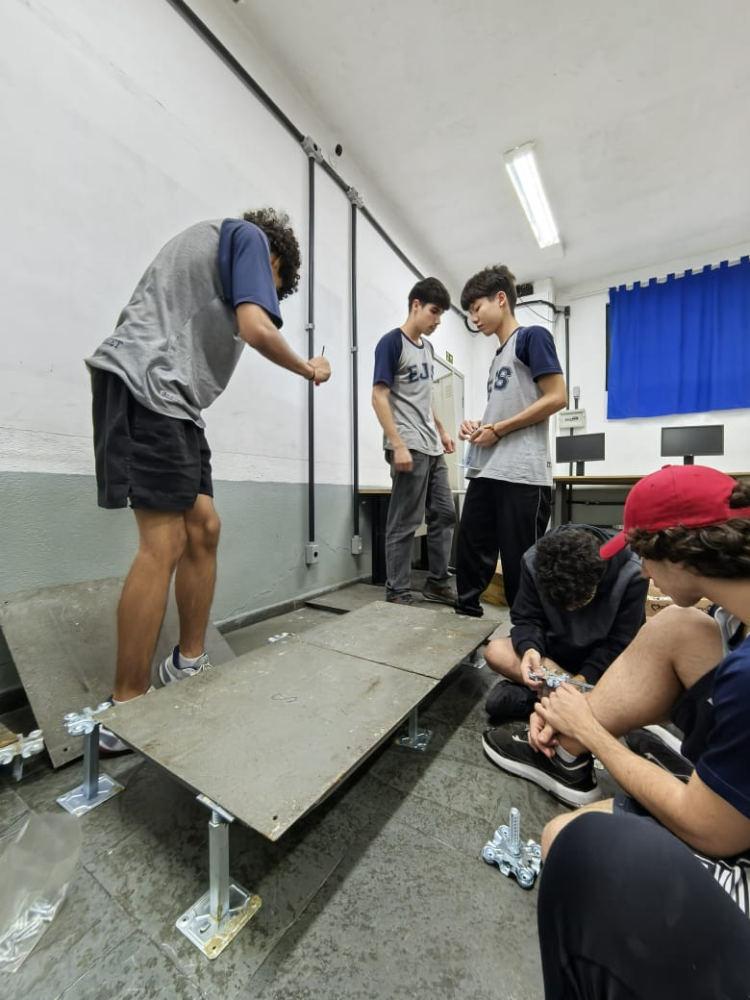Posicionando o Hack
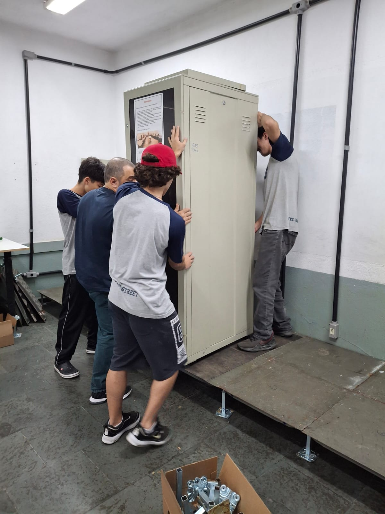Pisos montados c/ hack
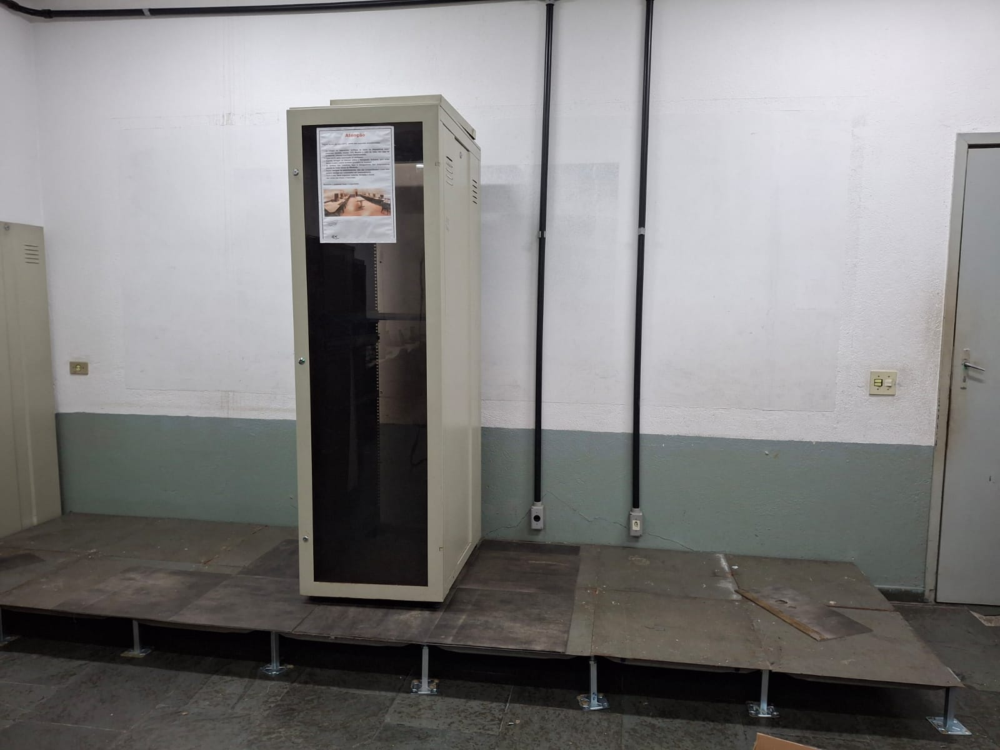

Somos estudantes da ETEC Jorge Street, comprometidos com a aplicação prática dos conhecimentos adquiridos ao longo do curso técnico.
Como parte do nosso Trabalho de Conclusão de Curso (TCC), desenvolvemos um Data Center baseado em virtulização em nuvem, com
o objetivo de oferecer uma solução tecnológica eficiente, segura e acessível. Nosso projeto visa facilitar a organização e o compartilhamento
de informações dentro do ambiente escolar. Através do uso da computação em nuvem, criamos um sistema que poderá ser utilizado
tanto por alunos quanto por professores, promovendo maior integração, praticidade e agilidade no acesso a materiais, arquivos e dados acadêmicos.
Ian Mota
Administrador de Servidores e
Desenvolvedor web
Kaique Bono
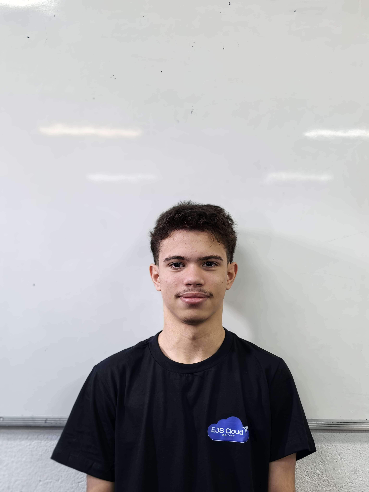Administrador de servidores
Técnico de redes
Isabella Amâncio
Analista de comunicações
Desenvolvedor web
Matheus Giorgi
Gerente de Projetos
Administrador de Servidores
Rafael Henrique
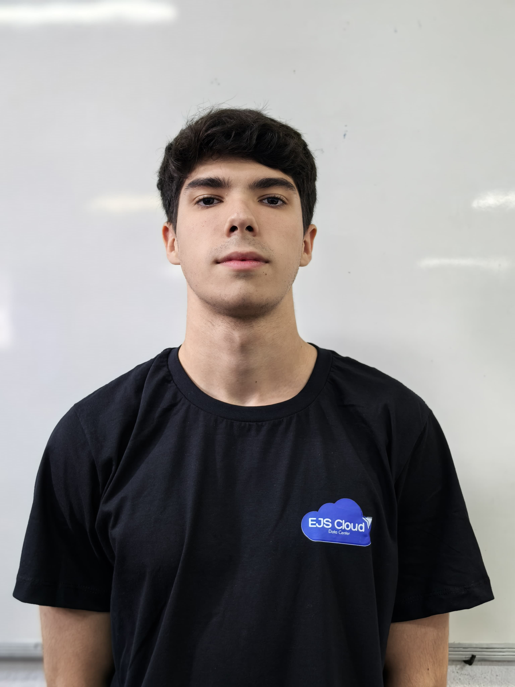Técnico de Redes
Gustavo Watanabe
Desenvolvedor Web
Técnicos de redes
Servidores
Hack
Pisos Elevados
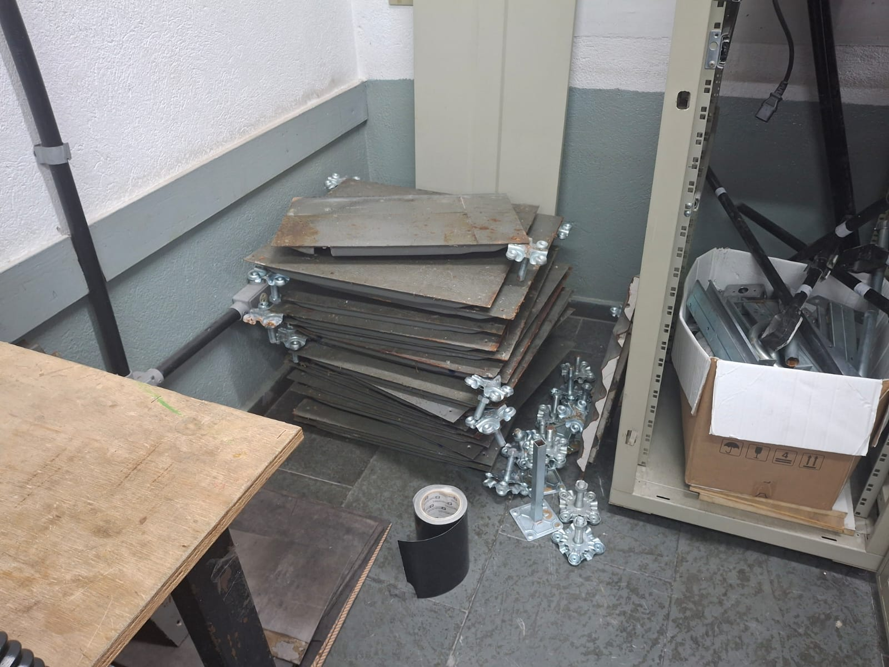Macaquinhos
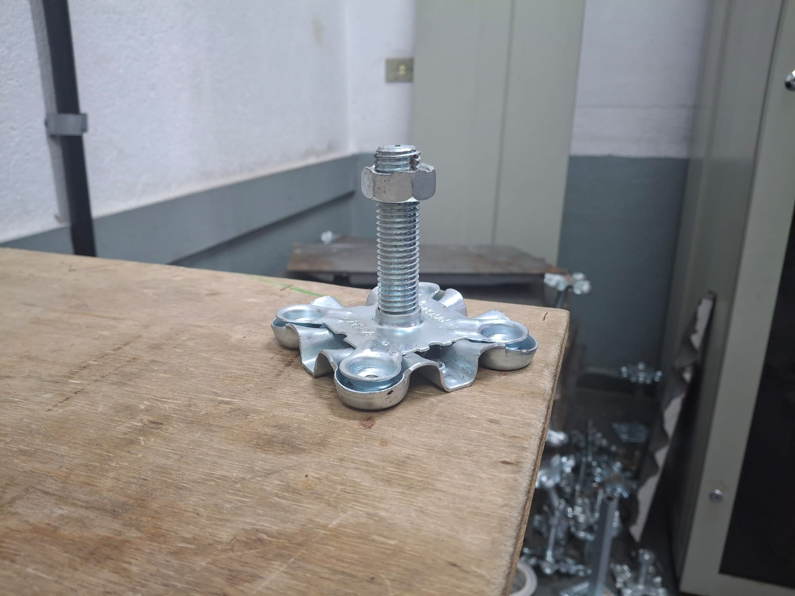Montando os Pisos
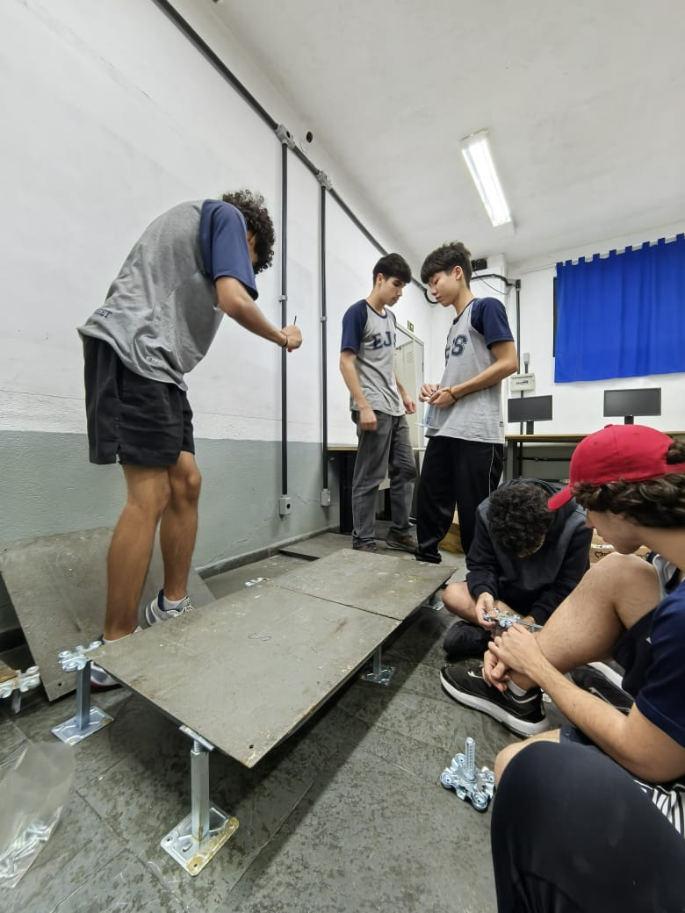Posicionando o Hack
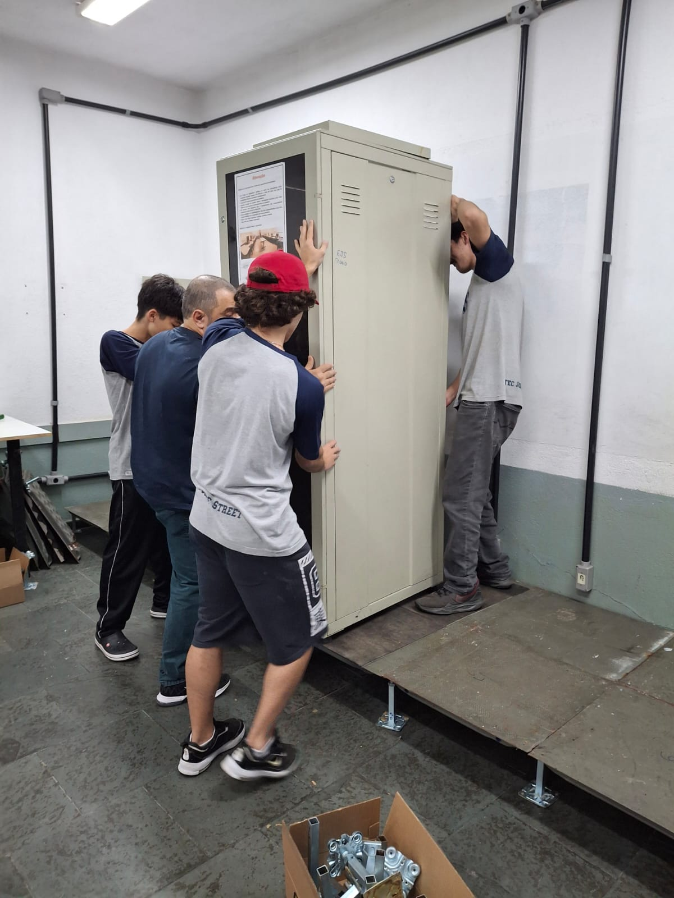Pisos montados c/ hack
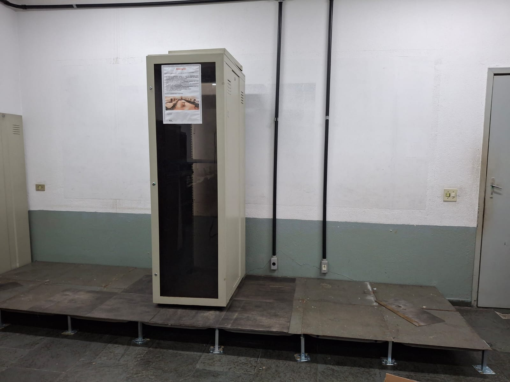